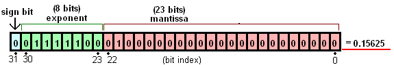

📝 Numerical Data Types
Contents
📝 Numerical Data Types#
Numerical values can be stored in computers as variables in a variety of formats.
Question Why might we want to have different number formats?
There are a lot of numerical values that can be expressed. We want to store and conduct computation with numbers in a standard and simple format.
Consider calculating the area of a circle. Most of the time you can get away with low precision approximation of \(\pi\) as 3.14. Computers do the same thing.
Cost of computation, random access memory (RAM) utilization, and required hard drive space is dependent on the precision which the data is saved.
Importing Packages#
Python has many built-in functions; however, its real power comes from packages.
Tip
Many packages are listed on the [Python Package Index](https://pypi.org/), and can be installed by typing `pip installPackages can be imported using import <package_name> as <name>.
We will import numpy - NumPy is the fundamental package for scientific computing in Python.
Note
You can read additional information on the NumPy Websiteimport numpy as np
Tip
Many packages have standard naming conventions. It is good practice to use these. For example, NumPy is commonly imported as np.Integer#
Integers are zero, positive, or negative numbers
Python and NumPy does its best to automatically choose or even adjust the datatype automatically.
Note
A Python integer is more than just an integer. There is a bunch of other information saved with the integer value in python -- this is why python (and scripting languages in general) are easier to use than low-level languages, but they are slightly less efficient.In most cases the efficiency of python is good enough!
a = 1
type(a)
int
import sys
sys.getsizeof(a)
28
The size allocated to the variable a is bigger than is actually required because Python allocates more space for additional utility.
Depending on your central processing unit (CPU) numbers might have a different size in memory. Older computers have 32-bit processors, this means the largest expressible number is \(2^{31}-1\), if you have a 64-bit processor it is \(2^{63}-1\).
sys.maxsize
9223372036854775807
2**63
9223372036854775808
Let’s try a bigger number:
2**102
5070602400912917605986812821504
Python will allocate more space and automatically add additional bytes to accommodate larger numbers
sys.getsizeof(0) # largest 0-digit number
24
sys.getsizeof(1) # smallest 1-digit number
28
sys.getsizeof(2**30 - 1) # largest 1-digit number
28
sys.getsizeof(2**30) # smallest 2-digit number
32
sys.getsizeof(2**60 - 1) # largest 2-digit number
32
Unsigned Integer#
a = np.array(3, dtype=np.uint8)
sys.getsizeof(a)
97
Question Why is this so big? it is just an unsigned 8-bit integer?
It is because we saved the data as an array. An array has additional information that is convenient in certain situations, but making a variable an array adds weight to the object.
The raw object can be obtained using a built-in method <obj>.nbytes.
Tip
You can view a list of built-in methods by writing `a.nbytes
1
Now we see that it is one Byte or 8 bits.
Use Case: Images#
Most images are saved as three-dimensional objects. The shape of the array is [x,y, color].
Specifically, images are defined by the [x,y] pixel position, and the color is represented by 4 channels:
R - Red
G - Green
B - Blue
A - alpha (transparency)
To define a 3-dimensional array, we type the following command:
a = np.array(3, dtype=np.uint32)
a.nbytes
4
Let’s load an image of the Drexel dragon.
from skimage.io import imread, imshow
drexel_dragon = imread("./images/drexel-dragon-all_blue.png")
imshow(drexel_dragon)
<matplotlib.image.AxesImage at 0x7fd4a6ace6e0>
Let’s view the shape of the variable holding the image information.
drexel_dragon.shape
(3070, 4355, 4)
Images are defined by the x,y pixel position and 4 channels for the color:
R - Red
G - Green
B - Blue
A - alpha (transparency)
Let’s view the datatype of drexel_dragon.
drexel_dragon.dtype
dtype('uint8')
Why is uint8 good for showing images?
Recall that colors are defined as:
R - Red
G - Green
B - Blue
A - alpha (transparency)
Each of the red, green, and blue channels are commonly defined as values from 0-255 while transparency is on a scale of 1-100. Let’s see this:
Tip
if you want to execute a built in method you need to call the method with `{obj}.{method}()`drexel_dragon.max(), drexel_dragon.min()
(255, 0)
Let’s validate that 255 is definable by 8 bits:
2**8
256
Floating Point Numbers#
Engineers always need to be aware of how exact a number is. Sometimes, it is necessary to describe numbers very exactly with many values after the decimal point. For such high precision to be carried in calculations or shown, computers generally and Python specifically requires using a floating point number.
How is a floating point number described?
Let’s take an example of a 32-bit floating point number.

For 32-bit floating point numbers:
1-bit controls the sign(s), \(S\)
8-bits control the exponent, \(e\)
23-bits set the fraction, \(M\)
a = np.array(np.pi, np.float32)
print(a.astype("str"))
3.1415927
Complex Numbers#
Sometimes in mathematics or engineering, it is useful to have a number system that operates in another dimension besides real space.
A complex number is an element of a number system that extends the real numbers with a specific element denoted \(i\), called the imaginary unit and satisfying the equation \(\sqrt(i) = −1\); every complex number can be expressed in the form \(a + bi\), where a and b are real numbers.
Complex numbers help solve polynomial functions, which has applications in:
Signal processing
Number theory
Electricity and Magnetism
Fluid dynamics
Control theory
In Python, the imaginary part is actually indicated with a j instead of an i for historical reasons.
a = 1.5
b = 0.8
c = a + b * 1j
print(c)
(1.5+0.8j)
type(c)
complex
We can use numpy to extract the real and imaginary components
print(np.real(c))
print(np.imag(c))
1.5
0.8